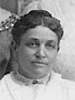
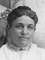
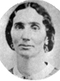
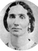

  |
Richard Alando Ballantyne 
Born 1 JUN 1848 Near Omaha,Douglas,Nebraska,USA
Died 28 SEP 1926 LOGAN,Cache,Utah,USA
Married
Mary Ann Stewart  27 DEC 1875 Salt Lake City,Salt Lake,Utah,USA 27 DEC 1875 Salt Lake City,Salt Lake,Utah,USA
The 1st child of Richard Ballantyne and Huldah Meriah Clark
|
|
Delecta Annie Jane Ballantyne
Born 22 NOV 1849 Salt Lake City,Salt Lake,Utah,USA
Died 20 DEC 1876
Married
Louis Fredrick Moench 16 FEB 1874 Salt Lake City,Salt Lake,Utah,USA
The 2nd child of Richard Ballantyne and Huldah Meriah Clark
|
* |
David Henry Ballantyne
Born 16 NOV 1851 Salt Lake City,Salt Lake,Utah,USA
Died 31 AUG 1863
The 3th child of Richard Ballantyne and Huldah Meriah Clark
|
|
Meriah Cedina ClarkBallantyne
Born 25 JUN 1856 Salt Lake City,Salt Lake,Utah,USA
Died 15 AUG 1931 OGDEN,Weber,Utah,USA
Married
Austin Cravath Brown 2 FEB 1874 Salt Lake City,Salt Lake,Utah,USA
The 4th child of Richard Ballantyne and Huldah Meriah Clark
|
|
John Taylor Ballantyne
Born 28 DEC 1857 Salt Lake City,Salt Lake,Utah,USA
Died 30 DEC 1910 Riverdale,Weber,Utah,USA
Married
Mahala Elizabeth Wilson 18 MAR 1885 Salt Lake City,Salt Lake,Utah,USA
The 5th child of Richard Ballantyne and Huldah Meriah Clark
|
|
Annie Ballantyne
Born 15 JUL 1860 OGDEN,Weber,Utah,USA
Died 7 NOV 1952 OGDEN,Weber,Utah,USA
Married
Louis Fredrick Moench 24 APR 1884 Salt Lake City,Salt Lake,Utah,USA
The 6th child of Richard Ballantyne and Huldah Meriah Clark
|
|
Roseltha Ballantyne
Born 10 MAR 1862 OGDEN,Weber,Utah,USA
Died 29 MAR 1945 Pocatello,Bannock,Idaho,USA
Married
Jesse George Stratford 23 NOV 1882 Salt Lake City,Salt Lake,Utah,USA
The 7th child of Richard Ballantyne and Huldah Meriah Clark
|
 |
Isabel Ballantyne
Born 3 AUG 1864 Eden,Weber,Utah,USA
Died 24 MAR 1927 Portland,Mltnmh.,Oregon,USA
Married
Lewis Alvin West 23 NOV 1882 Endowment House,Salt Lake City,Salt Lake,Utah
The 8th child of Richard Ballantyne and Huldah Meriah Clark
|
 |
Joseph Ballantyne
Born 20 FEB 1868 Eden,Weber,Utah,USA
Died 19 MAR 1944
Married
Rosannah Anderson Brown 24 FEB 1886
The 9th child of Richard Ballantyne and Huldah Meriah Clark
|

 
